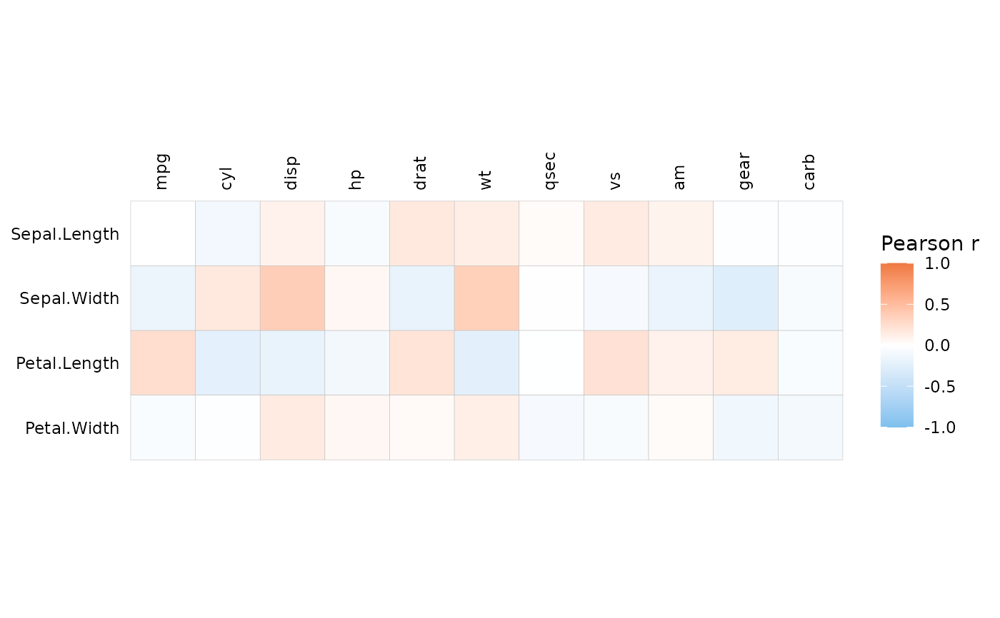
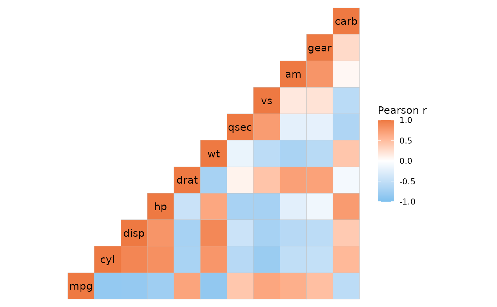
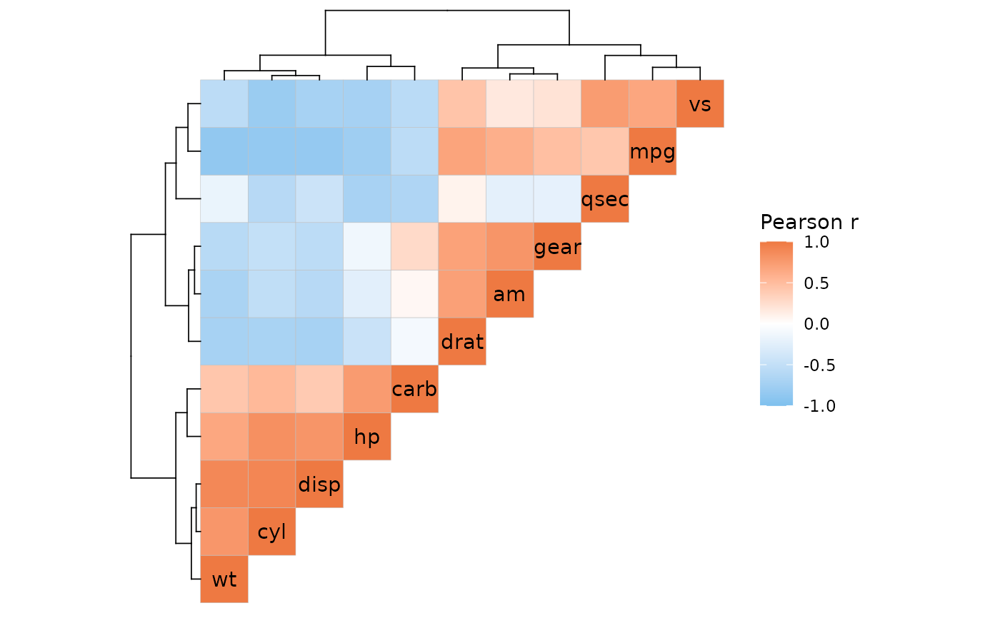

Make a correlation heatmap from input matrices. Uses a diverging colour scale centered around 0.
Usage
ggcorrhm(
x,
y = NULL,
cor_method = "pearson",
cor_use = "everything",
cor_in = FALSE,
high = "sienna2",
mid = "white",
low = "skyblue2",
midpoint = 0,
limits = c(-1, 1),
bins = NULL,
layout = "full",
mode = if (length(layout) == 1) "heatmap" else c("heatmap", "text"),
include_diag = TRUE,
na_col = "grey50",
na_remove = FALSE,
return_data = FALSE,
col_scale = NULL,
col_name = NULL,
size_range = c(4, 10),
size_scale = NULL,
size_name = NULL,
legend_order = NULL,
p_values = FALSE,
p_adjust = "none",
p_thresholds = c(`***` = 0.001, `**` = 0.01, `*` = 0.05, 1),
cell_labels = FALSE,
cell_label_p = FALSE,
cell_label_col = "black",
cell_label_size = 3,
cell_label_digits = 2,
cell_bg_col = "white",
cell_bg_alpha = 0,
border_col = "grey",
border_lwd = 0.1,
border_lty = 1,
show_names_diag = TRUE,
names_diag_params = NULL,
show_names_x = FALSE,
names_x_side = "top",
show_names_y = FALSE,
names_y_side = "left",
annot_rows_df = NULL,
annot_cols_df = NULL,
annot_rows_col = NULL,
annot_cols_col = NULL,
annot_rows_side = "right",
annot_cols_side = "bottom",
annot_dist = 0.2,
annot_gap = 0,
annot_size = 0.5,
annot_border_col = if (length(border_col) == 1) border_col else "grey",
annot_border_lwd = if (length(border_lwd) == 1) border_lwd else 0.5,
annot_border_lty = if (length(border_lty) == 1) border_lty else 1,
annot_na_col = na_col,
annot_na_remove = na_remove,
annot_rows_params = NULL,
annot_cols_params = NULL,
show_annot_names = TRUE,
annot_names_size = 9,
annot_rows_names_side = "bottom",
annot_cols_names_side = "left",
annot_rows_name_params = NULL,
annot_cols_name_params = NULL,
cluster_rows = FALSE,
cluster_cols = FALSE,
cluster_distance = "euclidean",
cluster_method = "complete",
show_dend_rows = TRUE,
show_dend_cols = TRUE,
dend_rows_side = "right",
dend_cols_side = "bottom",
dend_col = "black",
dend_dist = 0,
dend_height = 0.3,
dend_lwd = 0.3,
dend_lty = 1,
dend_rows_params = NULL,
dend_cols_params = NULL,
dend_rows_extend = NULL,
dend_cols_extend = NULL
)Arguments
- x
Matrix or data frame in wide format containing the columns to correlate against each other or against the columns in
y.- y
Optional matrix or data frame in wide format containing columns to correlate with the columns in
x.- cor_method
String specifying correlation method to use in the
stats::cor()function. Default is 'pearson'.- cor_use
String specifying the
useargument ofstats::cor(), which defines how to deal with missing values. Default is 'everything'.- cor_in
Logical indicating if the input data contains correlation values and any correlation computations (including p-values) should be skipped. Default is FALSE.
- high
Colour to use for the highest value of the colour scale.
- mid
Colour to use for 0 in the colour scale.
- low
Colour to use for the lowest value of the colour scale.
- midpoint
Value for the middle point of the colour scale.
- limits
Numeric vector of length two for the limits of the colour scale. NULL uses the default.
- bins
Number of bins to divide the scale into (if continuous values). A 'double' class value uses 'nice.breaks' to put the breaks at nice numbers which may not result in the specified number of bins. If an integer the number of bins will be prioritised.
- layout
String specifying the layout of the output heatmap. Possible layouts include 'topleft', 'topright', 'bottomleft', 'bottomright', or the 'whole'/'full' heatmap (default and only possible option if the matrix is asymmetric). A combination of the first letters of each word also works (i.e. f, w, tl, tr, bl, br). If layout is of length two with two opposing triangles, a mixed layout will be used. For mixed layouts,
modeneeds a vector of length two (applied in the same order as layout). See details ofgghm()for more information.- mode
A string specifying plotting mode. Possible values are
heatmap/hmfor a normal heatmap, a number from 1 to 25 to draw the corresponding shape,textto write the cell values instead of filling cells (colour scaling with value), andnonefor blank cells.- include_diag
Logical indicating if the diagonal cells should be plotted (if the matrix is symmetric).
- na_col
Colour to use for cells with NA (both main heatmap and annotation).
- na_remove
Logical indicating if NA values in the heatmap should be omitted (meaning no cell border is drawn). This does not affect how NAs are handled in the correlation computations, use the
cor_useargument for NA handling in correlation.- return_data
Logical indicating if the data used for plotting (i.e. the correlation values and, if computed, clustering and p-values) should be returned.
- col_scale
Scale to use for cell colours. If NULL (default), a divergent scale is constructed from the
high,mid,low,midpoint,limits, andbinsarguments. These arguments are ignored if aggplot2::scale_*function is provided instead. If a string, the corresponding Brewer or Viridis scale is used. A string with a scale name with "rev_" in the beginning or "_rev" at the end will result in the reversed scale. In mixed layouts, can also be a list of length two containing the two scales to use.- col_name
String to use for the correlation scale. If NULL (default) the text will depend on the correlation method. Can be two values in mixed layouts for dual scales.
- size_range
Numeric vector of length 2, specifying lower and upper ranges of shape sizes. Ignored if
size_scaleis not NULL.- size_scale
ggplot2::scale_size_*call to use for size scaling ifmodeis a number from 1 to 25 (R pch). The default behaviour (NULL) is to use a continuous scale with the absolute values of the correlation.- size_name
String to use for the size scale legend title. Can be two values in mixed layouts for dual scales.
- legend_order
Integer vector specifying the order of legends (first value is for the first legend, second for the second, etc). The default (NULL) shows all but size legends. NAs hide the corresponding legends, a single NA hides all. Ignored for
ggplot2scale objects incol_scaleandsize_scale.- p_values
Logical indicating if p-values should be calculated. Use with
p_thresholdsto mark cells, and/orreturn_datato get the p-values in the output data.- p_adjust
String specifying the multiple testing adjustment method to use for the p-values (default is "none"). Passed to
stats::p.adjust().- p_thresholds
Named numeric vector specifying p-value thresholds (in ascending order) to mark. The last element must be 1 or higher (to set the upper limit). Names must be unique, but one element can be left unnamed (by default 1 is unnamed, meaning values between the threshold closest to 1 and 1 are not marked in the plot). If NULL, no thresholding is done and p-value intervals are not marked with symbols.
- cell_labels
Logical specifying if the cells should be labelled with the correlation values. Alternatively, a matrix or data frame with the same shape and dimnames as
xcontaining values to write in the cells. If mode istext, the cell label colours will scale with the correlation values andcell_label_colis ignored.- cell_label_p
Logical indicating if, when
cell_labelsisTRUE, p-values should be written instead of correlation values.- cell_label_col
Colour to use for cell labels, passed to
ggplot2::geom_text().- cell_label_size
Size of cell labels, used as the
sizeargument inggplot2::geom_text().- cell_label_digits
Number of digits to display when cells are labelled (if numeric values). Default is 2, passed to
base::round(). NULL for no rounding.- cell_bg_col
Colour to use for cell backgrounds in modes 'text' and 'none'.
- cell_bg_alpha
Alpha for cell colours in modes 'text' and 'none'.
- border_col
Colour of cell borders. If
modeis not a number,border_colcan be set to NA to remove borders completely.- border_lwd
Size of cell borders. If
modeis a number,border_colcan be set to 0 to remove borders.- border_lty
Line type of cell borders. Either a number or its corresponding name, or a string of length 2, 4, 6, or 8. See 'lty' of
graphics::par()for details. Not supported for numericmode.- show_names_diag
Logical indicating if names should be written in the diagonal cells (for symmetric input).
- names_diag_params
List with named parameters (such as size, angle, etc) passed on to geom_text when writing the column names in the diagonal.
- show_names_x, show_names_y
Logical indicating if names should be written on the x and y axes. Labels can be customised using
ggplot2::theme()on the output plot.- names_x_side
String specifying position of the x axis names ("top" or "bottom").
- names_y_side
String specifying position of the y axis names ("left" or "right").
- annot_rows_df, annot_cols_df
Data frame for row and column annotations. The names of the columns in the data must be included, either as row names or in a column named
.names. Each other column specifies an annotation where the column name will be used as the annotation name (in the legend and next to the annotation). Numeric columns will use a continuous colour scale while factor or character columns use discrete scales.- annot_rows_col, annot_cols_col
Named list for row and column annotation colour scales. The names should specify which annotation each scale applies to. Elements can be strings or ggplot2 "Scale" class objects. If a string, it is used as the brewer palette or viridis option. If a scale object it is used as is, allowing more flexibility. This may change the order that legends are drawn in, specify order using the
guideargument in theggplot2scale function.- annot_rows_side
String specifying which side row annotation should be drawn ('left' or 'right', defaults to 'left').
- annot_cols_side
String specifying which side column annotation should be drawn ('bottom' or 'top', defaults to 'bottom').
- annot_dist
Distance between heatmap and first annotation cell where 1 is the size of one heatmap cell. Used for both row and column annotation.
- annot_gap
Distance between each annotation where 1 is the size of one heatmap cell. Used for both row and column annotation.
- annot_size
Size (width for row annotation, height for column annotation) of annotation cells compared to a heatmap cell. Used for both row and column annotation.
- annot_border_col
Colour of cell borders in annotation. By default it is the same as
border_colof the main heatmap if it is of length 1, otherwise uses default (grey).- annot_border_lwd
Line width of cell borders in annotation. By default it is the same as
border_lwdof the main heatmap if it is of length 1, otherwise uses default (0.5).- annot_border_lty
Line type of cell borders in annotation. By default it is the same as
border_ltyof the main heatmap if it is of length 1, otherwise uses default (solid).- annot_na_col
Colour to use for NA values in annotations. Annotation-specific colour can be set in the ggplot2 scales in the
annot_*_fillarguments.- annot_na_remove
Logical indicating if NAs in the annotations should be removed (producing empty spaces).
- annot_rows_params, annot_cols_params
Named list with parameters for row or column annotations to overwrite the defaults set by the
annot_*arguments, each name corresponding to the*part (see details ofgghm()for more information).- show_annot_names
Logical controlling if names of annotations should be shown in the drawing area.
- annot_names_size
Size of annotation names.
- annot_rows_names_side
String specifying which side the row annotation names should be on. Either "top" or "bottom".
- annot_cols_names_side
String specifying which side the column annotation names should be on. Either "left" or "right".
- annot_rows_name_params, annot_cols_name_params
Named list of parameters for row and column annotation names. Given to
grid::textGrob, see?grid::textGrobfor details.?grid::gparis also helpful.- cluster_rows, cluster_cols
Logical indicating if rows or columns should be clustered. Can also be
hclustordendrogramobjects.- cluster_distance
String with the distance metric to use for clustering, given to
stats::dist().- cluster_method
String with the clustering method to use, given to
stats::hclust().- show_dend_rows, show_dend_cols
Logical indicating if a dendrogram should be drawn for the rows or columns.
- dend_rows_side
Which side to draw the row dendrogram on ('left' or 'right', defaults to 'left').
- dend_cols_side
Which side to draw the column dendrogram on ('bottom' or 'top', defaults to 'bottom').
- dend_col
Colour to use for dendrogram lines, applied to both row and column dendrograms.
- dend_dist
Distance from heatmap (or annotation) to leaves of dendrogram, measured in heatmap cells (1 is the size of one cell).
- dend_height
Number by which to scale dendrogram height, applied to both row and column dendrograms.
- dend_lwd
Linewidth of dendrogram lines, applied to both row and column dendrograms.
- dend_lty
Dendrogram line type, applied to both row and column dendrograms.
- dend_rows_params, dend_cols_params
Named list for row or column dendrogram parameters. See details of
gghm()for more information.- dend_rows_extend, dend_cols_extend
Named list or functional sequence for specifying
dendextendfunctions to apply to the row or column dendrogram. See details ofgghm()andggcorrhm()for usage.
Value
The correlation heatmap as a ggplot object.
If return_data is TRUE the output is a list containing the plot (named 'plot'),
the correlations ('plot_data', with factor columns 'row' and 'col' and a column 'value' containing the cell values),
and the result of the clustering ('row_clustering' and 'col_clustering', if clustered).
If p-values were calculated, two additional columns named 'p_val' and 'p_adj' are included in 'plot_data', containing nominal and adjusted p-values.
If the layout is mixed, an extra factor column named 'layout' is included, showing which triangle each cell belongs to.
Details
ggcorrhm() makes it convenient to make correlation heatmaps, taking the input matrix or data frame to visualise the correlations between columns with the gghm() function.
The input values can either be one matrix or data frame with columns to correlate with each other, or two
matrices or data frames with columns to correlate between the matrices. No rownames are needed, but
if two matrices are provided they should have the same number of rows and the rows should be ordered in a meaningful way
(i.e. same sample/individual/etc in the same row in both).
Row and column names are displayed in the diagonal by default if the correlation matrix is symmetric (only x is provided or x and y are identical).
The colour scale is set to be a diverging gradient around 0, with options to change the low, mid, and high colours, the midpoint, and the limits (using the arguments
of the same names). The bins argument converts the scale to a discrete scale divided into bins equally distributed bins (if an integer the breaks may be at strange numbers,
if a double the number of bins may be different but the breaks are at nicer numbers). These arguments can be of length two (limits a list of length two) two apply
to each triangle in a mixed layout (detailed more in the details section of gghm()). The size_range argument (for size scales) can also be a list of length two like limits.
The size scale, used when a numeric cell shape is specified, is set to vary the shape size between 4 and 10 (can be changed with the size_range argument)
and to transform the values to absolute values (so that both positive and negative correlations are treated equally).
This behaviour can be overwritten by setting size_scale to another ggplot2::scale_size_* function with the desired
arguments, or ggplot2::scale_size() for no special behaviour. ggplot2::scale_size_area() also scales with the absolute value,
but only the upper size limit can be set.
When the absolute value transformation is used the legend for sizes loses its meaning (only displaying positive values)
and is therefore set to not be shown if legend_order is NULL.
For symmetric correlation matrices, the dendrogram customisation arguments dend_rows_extend and dend_cols_extend work best with functions that only change the dendrogram
cosmetically such as the colours, linetypes or node shapes. While it is possible to reorder (using e.g. 'rotate', 'ladderize') or prune (using e.g. 'prune'),
anything that changes the structure of the dendrogram may end up looking strange for symmetric matrices if
only applied to one dimension (e.g. the diagonal may not be on the diagonal, triangular or mixed layouts may not work).
The same applies if the cluster_rows and cluster_cols arguments are hclust or dendrogram objects.
Examples
# Basic usage
ggcorrhm(mtcars)
# With two matrices
ggcorrhm(iris[1:32, -5], mtcars)

# Different layout
ggcorrhm(mtcars, layout = "br")

# With clustering
ggcorrhm(mtcars, layout = "tl", cluster_rows = TRUE, cluster_cols = TRUE)

# With annotation
set.seed(123)
annot <- data.frame(.names = colnames(mtcars),
annot1 = rnorm(ncol(mtcars)),
annot2 = sample(letters[1:3], ncol(mtcars), TRUE))
ggcorrhm(mtcars, layout = "tr", annot_cols_df = annot)
# Both
ggcorrhm(mtcars, layout = "full", cluster_rows = TRUE, cluster_cols = TRUE,
annot_rows_df = annot[, -3], annot_cols_df = annot[, -2])
# Mixed layout
ggcorrhm(mtcars, layout = c("tl", "br"))